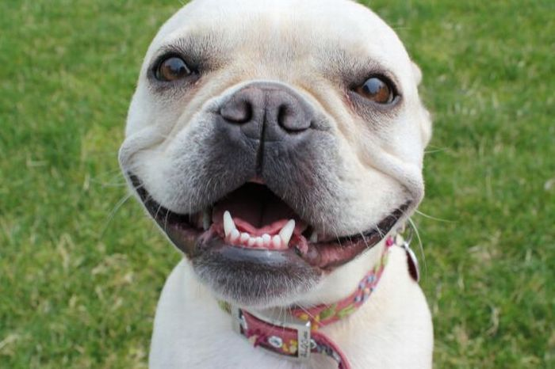

http://1000awesomethings.com/2010/10/05/403-seeing-a-really-happy-dog-out-for-a-walk/
This is Sam. He is a Corgi breed and is 2 years old. He is a very loving dog and loves to go on walks!
https://medium.com/happy-hound/12-signs-of-an-extremely-happy-pooch-60e42bd53f5d
This is Lucy. She is a Golden Retriever breed and is 4 years old. She loves to go on any type of adventure with you, especially road trips.
https://www.companionanimalpsychology.com/2017/02/happy-dogs-photos.html
This is Edward. He is a year old and is a very calm and loving dog.
http://1funny.com/happy-dog-5/
This is Dewie. He is 16 months old and loves playing around with you and going for walks.
If this is your first time owning a dog or you just want to know some more information then you click this link here: How to care for a dog and it will explain how to care for a dog!